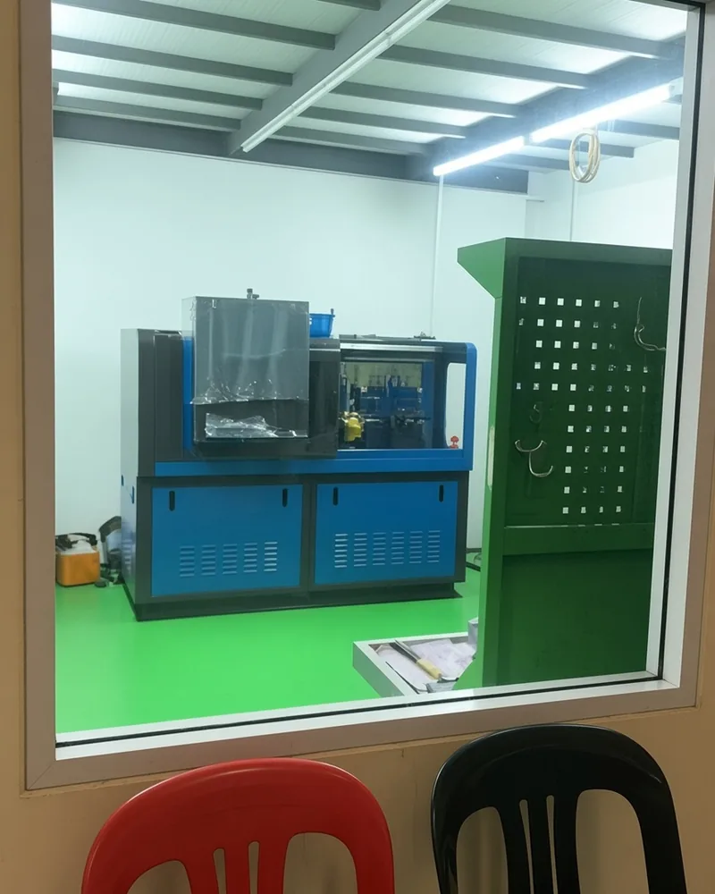
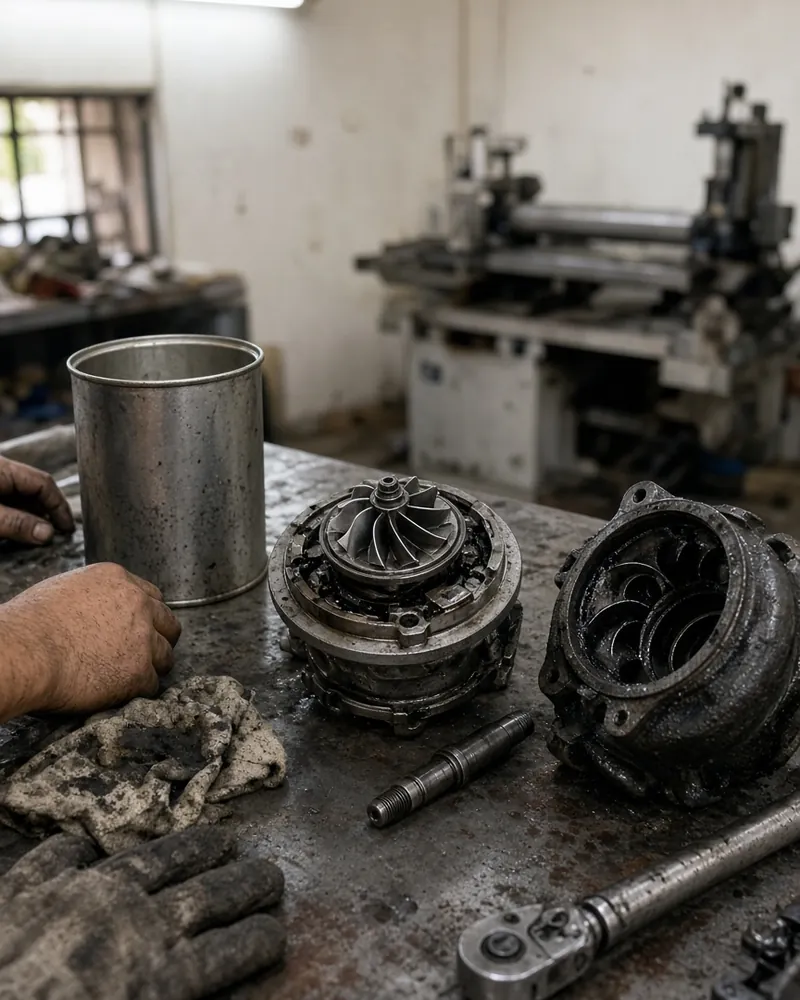

KH Diesel Fuel Pump menguji, membersihkan dan menentukur injector common-rail serta injector diesel lama. Bengkel terletak di Batu 10 di Jalan Bintulu–Miri, Bintulu, dengan bilik ujian common-rail untuk kerja injector.
Dikemas kini: 23 Nov 2026
Tanda injector perlu diuji
- Bunyi ketukan atau bergemerincing yang tidak pernah ada sebelum ini
- Asap putih atau hitam, terutama semasa enjin baru dihidupkan
- Berlengah kasar atau satu silinder tidak membakar dengan betul
- Penggunaan bahan api lebih tinggi
- Bau diesel atau diesel dalam minyak enjin
Ujian injector diesel menunjukkan cara setiap injector menyembur dan berapa banyak bahan api yang dipulangkan, jadi anda tahu mana yang perlu dibaiki dan tidak perlu menggantikan satu set penuh secara agak-agak.

Injector dan muncung diesel lama
Injector diesel mekanikal pada lori dan mesin lama diperiksa dari segi corak semburan dan tekanan bukaan. Beritahu kami enjinnya melalui WhatsApp supaya kami tahu apa yang anda ada.
Apa yang perlu dihantar di WhatsApp
- Berapa banyak injector dan dari enjin mana
- Gambar injector dan nombor alat gantinya jika kelihatan
- Gejala yang anda perasan
Cara kerja dijalankan
- Hantar gambar melalui WhatsAppHantar gambar bahagian dan beritahu kami kenderaan atau mesin.
- UjianPam, injector atau turbo diperiksa di bengkel.
- Sebut hargaAnda menerima dapatan dan sebut harga sebelum sebarang pembaikan bermula.
- PembaikanBahagian dibaiki selepas anda beri kebenaran.
- Keputusan ujianIa diuji semula dan anda melihat keputusannya sebelum dipasang semula.
Soalan yang sering ditanya
Ke mana saya perlu bawa injector?
Ke bengkel di Batu 10, Jalan Bintulu–Miri, Bintulu. Alamat penuh ada di halaman hubungi.
Adakah bengkel buka pada hari Ahad?
Tidak. Bengkel buka Isnin hingga Sabtu, 8:00 pagi hingga 5:30 petang, dan tutup pada hari Ahad.
Bagaimana nak tanya tentang injector saya?
WhatsApp 019-854 5433 dengan enjin, bilangan injector dan gambar.
Kawasan berhampiran Batu 10
Perkhidmatan seterusnya: Baiki turbo
 Baiki pam bahan api dieselPam inline dan rotary diuji dan ditetapkan di bangku ujian.
Baiki pam bahan api dieselPam inline dan rotary diuji dan ditetapkan di bangku ujian. Baiki pam common railPam tekanan tinggi untuk diesel moden.
Baiki pam common railPam tekanan tinggi untuk diesel moden.
Baiki turboTurbocharger dibuka, dibina semula dan diperiksa. Diagnosis sistem bahan apiCari tahu sama ada puncanya pada pam, injector atau turbo.
Diagnosis sistem bahan apiCari tahu sama ada puncanya pada pam, injector atau turbo.Cari bengkel
Sublot 14 of Parent Lot 1337 & Lot 341, Block 33, Kemena Land District, 97000 Bintulu, SarawakBatu 10, Jalan Bintulu–Miri, Bintulu
| Isnin hingga Sabtu | 8:00 pagi hingga 5:30 petang |
|---|---|
| Ahad | Tutup |
Waktu Malaysia (Bintulu)
Pernah buat kerja di sini? Ulasan Google ringkas membantu pemilik diesel lain di Bintulu mencari bengkel ini.
Tulis ulasan GoogleHantar gambar bahagian dahulu
WhatsApp kami gambar pam, injector atau turbo yang jelas, serta kenderaan atau mesin asalnya.